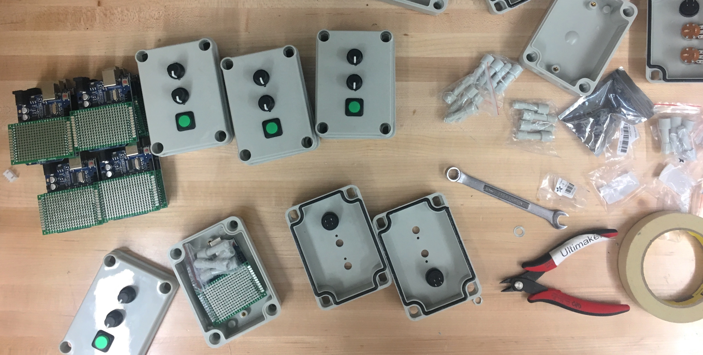
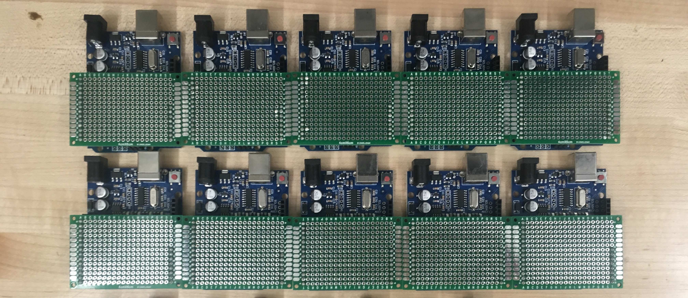
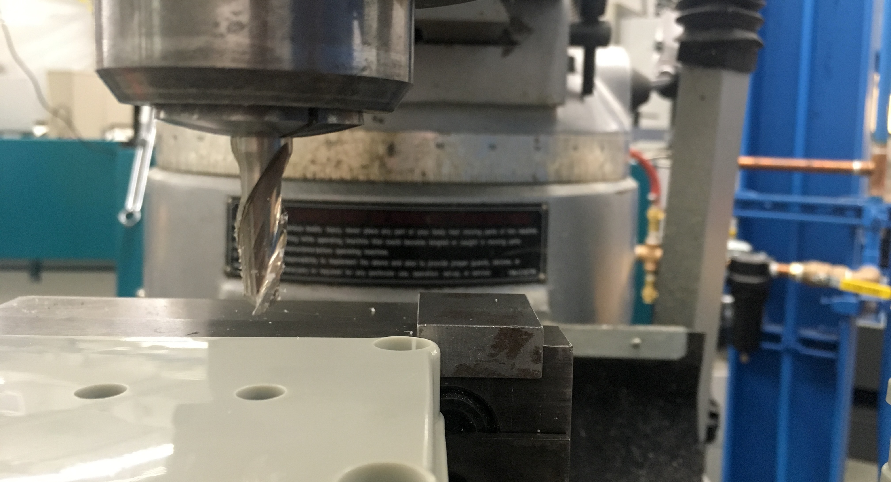
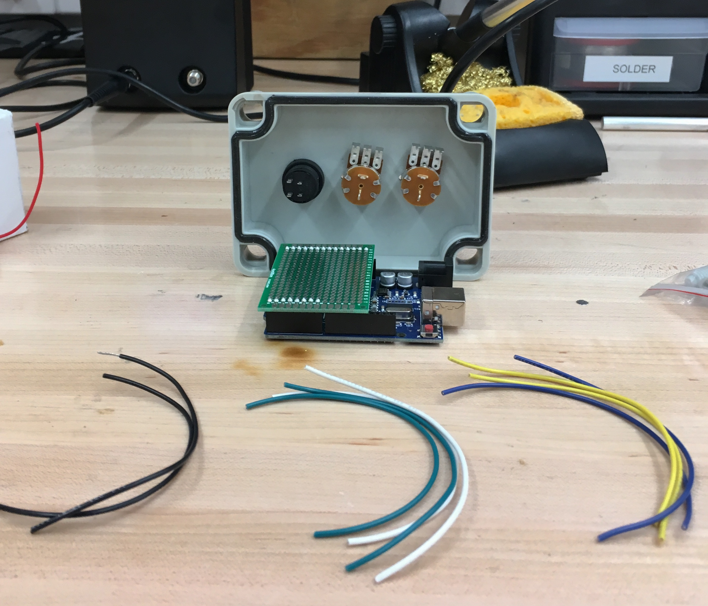
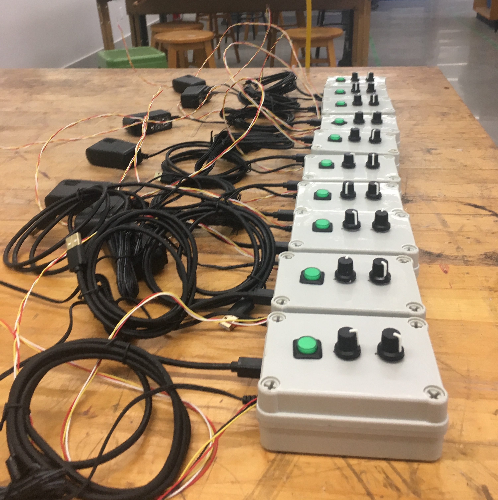

Crane Project Controller Design
Through the Fall of 2017, I worked for the Department of Mechanical Engineering to design an Arduino based servo controller system, and then fabricate 10 to support a sophomore year class project in 24-262 Stress Analysis. The semester long project requires students build a crane out of aluminum, and drive a servo to lift a mass a specified height. The original controllers were PIC based, without an enclosure and standard power supply, and after nearly 20 years of the project, they all broke. This left us with one semester to build a new and more future proof solution.

After assessing the old controllers and deciding on the functionality of the new ones, I went about beginning fabrication. The primary concern was ensuring a steady power supply to the servo and ensuring the servo was not held at its stall torque for a long duration. Beginning with Arduino clones, I soldered on pin headers to PCBs to make a custom shield I could then fabricate more of.
Starting with generic enclosure, I customized them to house the Arduino, custom shield, and components inside.

The enclosure needed to hold two potentiometers to control speed and initial position of the servo, a pushbutton to initiate the motion to lift the mass, as well as access holes for power and controll wires.

After boring holes in all 10 enclosures, snipping and stripping all the necessary wires, and locking the potentiometers and push button into position, it was time to begin soldering them all to the PCB.


This was pretty tedious and took a fair bit of time. But once done, it was time to upload the code, test, and debug. The code had been partially written by a different student who had since graduated, so I had to update the code to match the new hardware.

Finally, after a semester of work, I ended up with 10 clean, functional, bug-free controllers! The exciting part about these new controllers is that after publishing instructions, students in the class familiar with Arduino can now make there own breadboard version of the controllers to test with on their own time if needed, and as they're based on the Arduino platform, any kind of problems the class faces with the controllers in the future should be easy to solve!
